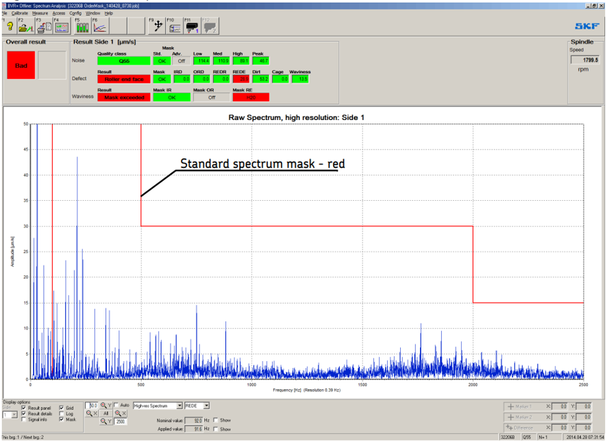
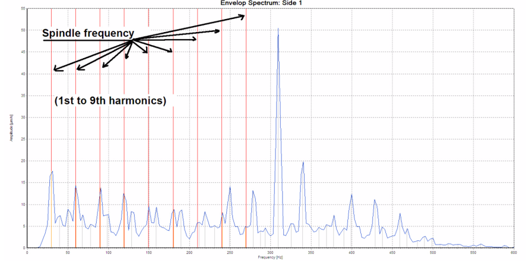
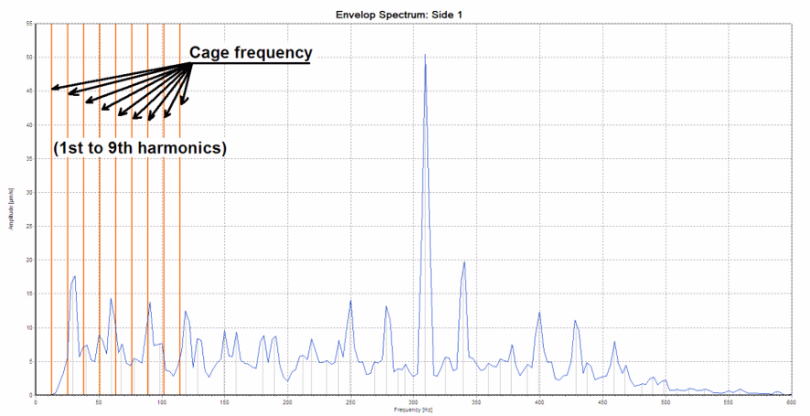
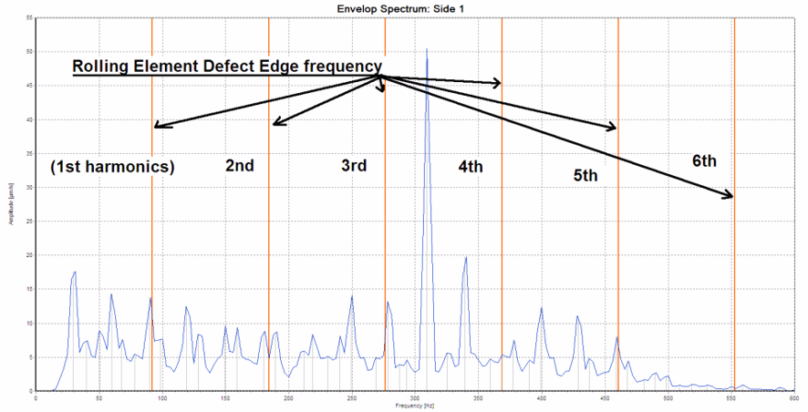
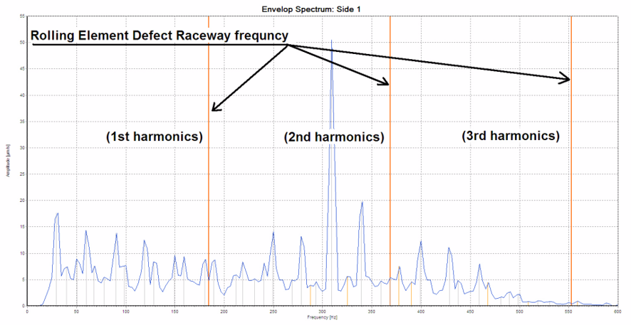
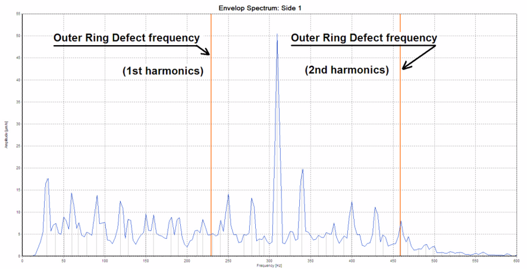
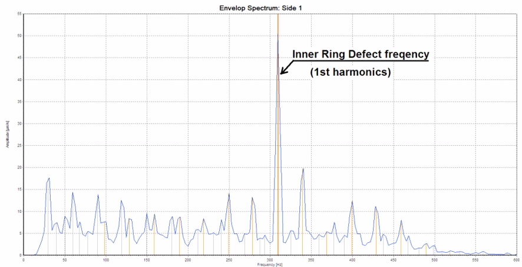
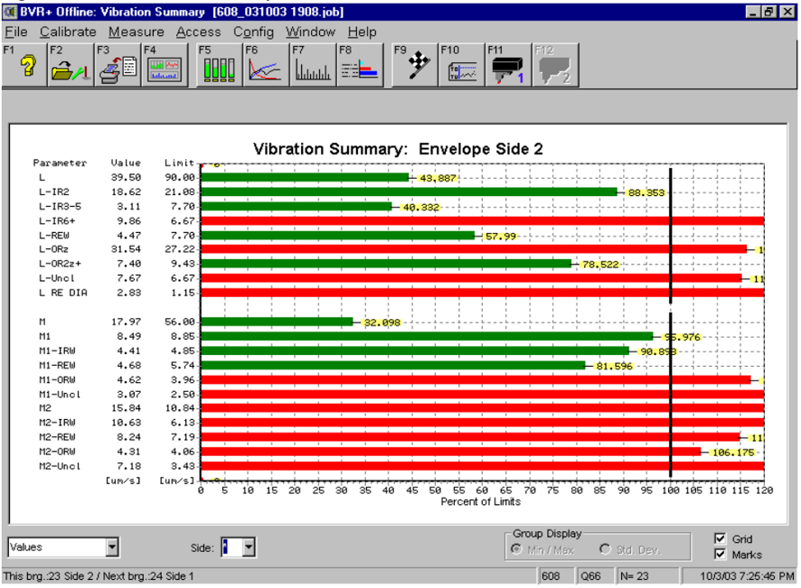

BSc Thesis Internship — SKF S.p.A. · Modugno (BA) · 2023
NVH Analysis of EV Ball Bearings — Defect Correlation & Process Quality
Vibration measurement, spectral analysis and defect correlation on single-row deep-groove ball bearings for electric-vehicle applications, tracing NVH signatures back to their production-process root causes — from raceway grinding to assembly.
Overview
The project was developed as the final work of my BSc in Mechanical Engineering at Politecnico di Bari, during a thesis internship at SKF Industrie S.p.A. in Modugno (BA). The activity focused on the vibration behaviour of a single-row deep-groove ball bearing variant dedicated to electric-vehicle applications.
The work covered the complete measurement and analysis loop: vibration testing of the bearings under standard operating conditions (constant inner-ring speed and constant pneumatic load applied on the outer ring), spectral decomposition of the acquired signals, identification of the origin of each defect through its characteristic defect frequencies, and correlation of the vibration signatures with the upstream production processes — raceway grinding, lapping, washing and cage assembly — in order to target the parameters driving scrap and support process improvement.
Approach
- Measured noise and vibration on the SKF MVH-90 tester: spindle-driven inner-ring rotation, pneumatically applied load on the outer ring, and a contact sensor with a 20 Hz–10 kHz bandwidth acquiring the vibration signal from the outer ring for both faces of the bearing.
- Characterised each bearing through the ABMA L/M/H/P band method: low-frequency bands linked to ring form errors (ovality, lobing), medium bands (split into sub-bands) to the waviness of rings and balls, high bands to raceway finishing quality, and peak detection to non-repetitive, discrete defects.
- Performed FFT-based spectral analysis with high-resolution spectra and envelope spectrum analysis, matching the measured peaks with the theoretical defect frequencies of inner ring, outer ring, rolling elements and cage computed from the bearing geometry and rotational speed; frequency-selective spectral masks acted as customer-specific acceptance limits.
- Classified the defect origin with a proprietary fingerprint-based classification algorithm, correlating band amplitudes, peak evolution over time and component geometry with outputs such as inner-ring, outer-ring and rolling-element defects, dirt and cage-related anomalies.
- Correlated the results with production data: scrap-lot analysis, dispersion of band amplitudes against acceptance limits, and peak–defect cross-checks linking every alarm to its upstream process step (grinding, lapping, washing, cage assembly).
Defect Correlation Methodology
Every component of a rotating bearing generates vibration at characteristic defect frequencies. Under the ideal rolling condition, the cage speed follows directly from the bearing geometry, and a defect located on a raceway produces a periodic impulse each time a rolling element crosses it. From the pitch diameter, ball diameter, number of balls and rotational speed, the theoretical frequencies for the outer ring (BPFO), inner ring (BPFI), rolling elements (BSF) and cage (FTF) are derived: when one of them coincides with a dominant spectral peak, the origin of the defect is identified.
Distributed and localized imperfections are captured by the L/M/H/P band framework: macro form errors (ovality, low-order lobes) surface in the low band; waviness of ring and ball surfaces in the medium band, whose sub-bands attribute the contribution to the inner ring, outer ring or rolling elements; raceway finishing problems such as burns and lapping defects in the high band. Discrete, non-repetitive events appear instead as peaks and are cross-checked against classified defects such as dirt or cage anomalies.
Applied to the analysed scrap lot of [INSERIRE DATO: numero di cuscinetti nel lotto analizzato] bearings, the methodology identified the medium band — waviness-related signatures on the rings as the dominant contributor, while peak-related scrap was traced back to discrete, individually verifiable defects. The overall picture indicated scratches, geometry deviations and plastic deformation as the most impactful factors, driving targeted corrective actions on the grinding and lapping parameter settings.
The Process in the SKF Software
The workflow described above is driven through a sequence of analysis views in SKF’s bearing vibration software. The raw, high-resolution spectrum is first compared against the standard spectrum mask, which gives the overall acceptance verdict. The envelope spectrum is then used to isolate each component’s characteristic frequency family — the spindle signature of the test rig, the cage frequency, the rolling element defect frequencies and the two raceway defect frequencies — so that a dominant peak is attributed to its physical origin rather than to the machine. A final summary view reports every band parameter against its acceptance limit, red-flagging the exceedances that classify the bearing.
Source note: the figures below are reproduced from SKF’s software documentation. They are generic reference illustrations of the measurement process — not measurements from the author’s own campaign, which remain confidential — and all rights on the original figures belong to SKF.








Results
- Built a complete, traceable mapping between NVH signatures and production process causes, from raceway grinding to lapping, washing and cage assembly.
- Identified medium-frequency, waviness-related exceedances as the dominant driver of scrap in the analysed lot, characterised through dispersion analysis against acceptance limits.
- Linked peak-related alarms to discrete, individually verifiable defects — rings, rolling elements, dirt and cage — with a defined verification routine for each category.
- Informed corrective actions on grinding and lapping parameter settings and on washing and inspection routines, aimed at reducing scrap ([INSERIRE DATO: riduzione osservata o stimata, in %]) and containing consumption.
- Delivered a structured data-analysis workflow (band dispersion and peak–defect correlation) for the lab's lot quality reporting.
- Consolidated the work into the BSc thesis in Applied Mechanics discussed at Politecnico di Bari (A.Y. 2022–2023).
Quantitative figures, proprietary algorithms and equipment internals are omitted, as they are subject to confidentiality.